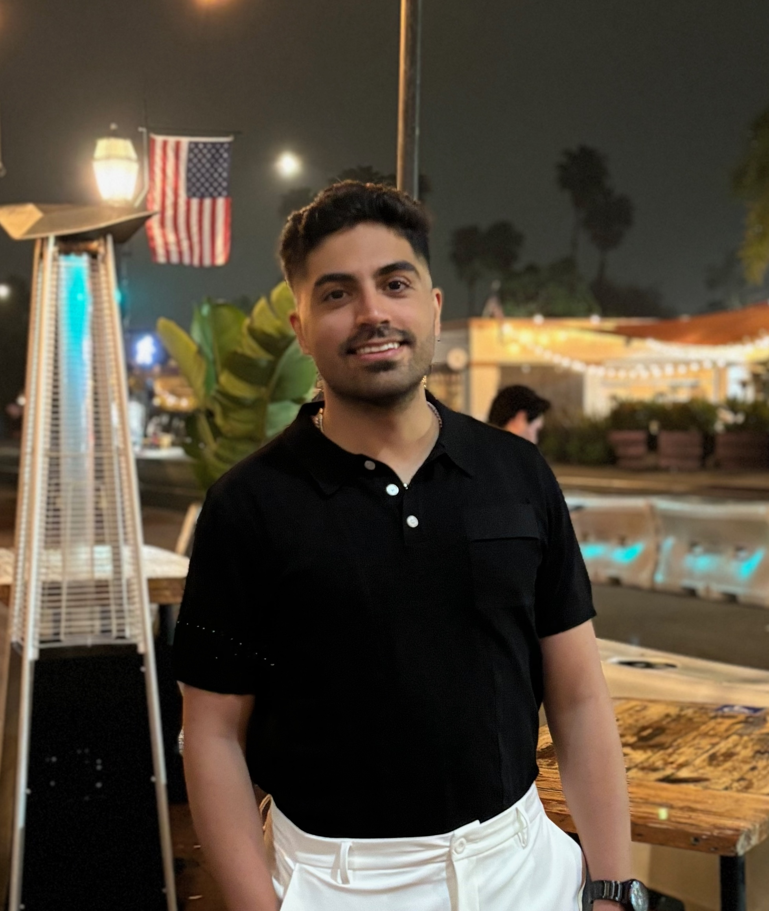

Sajjad Ghiasvand
PhD Student, Electrical & Computer Engineering
University of California, Santa Barbara
About Me
I am a PhD student in the Electrical and Computer Engineering Department at UC Santa Barbara, advised by Prof. Ramtin Pedarsani and Prof. Mahnoosh Alizadeh. Prior to joining UCSB, I earned my B.Sc. in Electrical Engineering with a minor in Computer Science from Sharif University of Technology in 2023.
My research spans text-based and multimodal large language models, with emphasis on:
- Personalization of LLMs and VLMs
- Efficient fine-tuning of LLMs and VLMs
- LLM post-training & imitation learning
- Federated and decentralized learning
- Robust machine learning
Feel free to reach out if you are interested in discussing a collaboration!
News
- Jun 2026 "MMLoP: Multi-Modal Low-Rank Prompting for Efficient Vision-Language Adaptation" accepted to ECCV 2026.
- Jun 2026 Started a Research Internship at Higharc, working on vision-language models for agentic home design editing.
- Mar 2026 "Few-Shot Adversarial Low-Rank Fine-Tuning of Vision-Language Models" accepted to Trustworthy AI Workshop at ICLR 2026.
- Jan 2026 "pFedMMA: Personalized Federated Fine-Tuning with Multi-Modal Adapter for Vision-Language Models" accepted to ICLR 2026.
- Aug 2025 Started an ML Internship at Handshake AI (joint project with OpenAI).
- May 2025 "Communication-Efficient and Tensorized Federated Fine-Tuning of Large Language Models" accepted to ACL Findings 2025.
- May 2025 "Decentralized Low-Rank Fine-Tuning of Large Language Models" accepted to REALM Workshop at ACL 2025.
- Apr 2025 "Robust Decentralized Learning with Local Updates and Gradient Tracking" accepted to IEEE Transactions on Networking.
Experience
-
Research Intern — Higharc
Jun 2026 – PresentBuilt data pipelines for structured architectural datasets; adapted vision-language models for agentic home design editing. Implemented fine-tuning and preference optimization pipelines and developed evaluation suites for layout validity and instruction-following accuracy.
-

Machine Learning Intern — Handshake AI (Joint with OpenAI)
Aug 2025 – Nov 2025Leveraged a paper-to-code pipeline to convert ICLR papers into runnable PyTorch implementations; designed evaluation rubrics and graded LLM-generated code.
-
UCSB
Research Assistant — UC Santa Barbara
Sep 2023 – PresentDeveloped low-rank and prompt-based adaptation methods for VLMs; designed communication-efficient federated fine-tuning algorithms using tensor decomposition; proposed decentralized and Byzantine-resilient optimization methods.
Publications
-
Preprint
REALM: Reliable Expertise-Aware Language Model Fine-Tuning from Noisy Annotations
arXiv, 2026 · PDF
-
ECCV 2026
MMLoP: Multi-Modal Low-Rank Prompting for Efficient Vision-Language Adaptation
ECCV 2026 · PDF
-
ICLR 2026
pFedMMA: Personalized Federated Fine-Tuning with Multi-Modal Adapter for Vision-Language Models
ICLR 2026 · PDF
-
ICLR Workshop
Few-Shot Adversarial Low-Rank Fine-Tuning of Vision-Language Models
Trustworthy AI @ ICLR 2026 · PDF
-
ACL 2025
Communication-Efficient and Tensorized Federated Fine-Tuning of Large Language Models
Findings of ACL 2025 · PDF
-
ACL Workshop
Decentralized Low-Rank Fine-Tuning of Large Language Models
REALM Workshop @ ACL 2025 · PDF
-
Journal
Robust Decentralized Learning with Local Updates and Gradient Tracking
IEEE/ACM Transactions on Networking, 2025 · PDF
-
Allerton 2024
Communication-efficient and Decentralized Federated Minimax Optimization
Allerton Conference, 2024 · PDF
-
Preprint
Exploring Cross-model Neuronal Correlations in the Context of Predicting Model Performance and Generalizability
arXiv, 2024